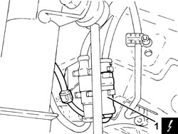
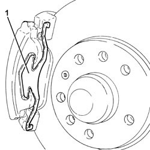
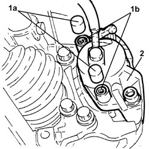
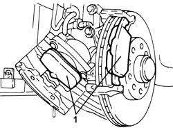
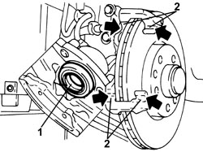
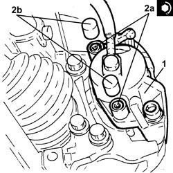
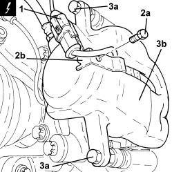
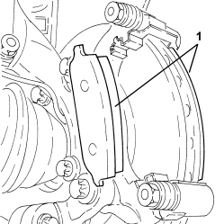
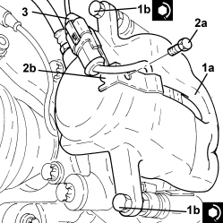

3310A60 FRONT BRAKE PADS - REPLACE
- Path
- Procedures > 33 BRAKES > 3310 DISC BRAKES > 3310A FRONT DISC BRAKES > 3310A60 FRONT BRAKE PADS - REPLACE
- Kind
- repair procedure (removal / refitting; the operation number is the code)
- Applies to
- all engines; all production periods
- Interactive page
- https://sloeber94.github.io/elrnDB-fCrm/en/#/194000473
Applies to: engines: 1.8, 2.2, 1.9 JTD 8v; all production periods
 Removing
Removing
 Refitting
Refitting- Position the vehicle on a lift.
- Make sure that the ignition key is in the OFF position, then disconnect the battery terminal (-).
Description | Connector | |
|---|---|---|
- | Battery |
Op. 4450B02 LEFT FRONT WHEEL - R.R
1. Disconnect the electrical connection for the brake pad wear sensor and release the wiring from the fastenings.
Description | Connector | |
|---|---|---|
1 | Left brake pad wear sensor (switch) |

Applies to: engines: 1.8, 2.2, 1.9 JTD 8v; all production periods
1. Remove the brake caliper spring.

Applies to: engines: 1.8, 2.2, 1.9 JTD 8v; all production periods
1. Remove the plugs (1a) and undo the brake caliper fixing bolts (1b).
2. Move the brake caliper complete with inner pad from its housing.

Applies to: engines: 1.8, 2.2, 1.9 JTD 8v; all production periods
1. Remove the front brake pads.

Applies to: engines: 1.8, 2.2, 1.9 JTD 8v; all production periods
Refitting
Removing1. Push the brake caliper piston into its housing using a suitable tool.
2. Grease the brake caliper and bracket in the areas of the pad support surfaces.

Applies to: engines: 1.8, 2.2, 1.9 JTD 8v; all production periods
- Place the lfront brake pads in their housings.
1. Place the brake caliper assembly in its housing.
2. Tighten the bolts (2a) fixing the brake caliper to the recommended torque and fit the plugs (2b).
Component | Fastening | dia | Value (daNm) | Validity |
|---|---|---|---|---|
Front brake calipers | Bolt | - | (bracket side) 2.5 - 3.0 | 1.8 2.2 1.9 JTD 8v |

Applies to: engines: 1.8, 2.2, 1.9 JTD 8v; all production periods
- Place the brake caliper spring in its housing.
- Connect the electrical connection for the brake pad wear sensor and fasten the electrical wiring.
Op. 4450B02 LEFT FRONT WHEEL - R.R
- Connect the negative battery terminal.
- Remove the vehicle from the lift.
Applies to: engines: 1.9 JTD 16v, 2.4 JTD 20v; all production periods
Removing
Refitting- Position the vehicle on a lift.
- Make sure that the ignition key is in the OFF position, then disconnect the battery terminal (-).
Description | Connector | |
|---|---|---|
- | Battery |
Op. 4450B02 LEFT FRONT WHEEL - R.R
1. Disconnect the electrical connection for the brake pad wear sensor.
Description | Connector | |
|---|---|---|
1 | Left brake pad wear sensor (switch) |
2. Undo the bolt (2a) for the bracket (2b) securing the brake pad wear sensor electrical connection.
3. Undo the bolts (3a) and place the brake caliper (3b) at the side without disconnecting the hydraulic pipe.

Applies to: engines: 1.9 JTD 16v, 2.4 JTD 20v; all production periods
1. Remove the front brake pads.

Applies to: engines: 1.9 JTD 16v, 2.4 JTD 20v; all production periods
Refitting
Removing- Push the brake caliper piston into its housing using a suitable tool.
- Grease the brake caliper and bracket in the areas of the pad support surfaces.
- Place the front brake pads in their housings.
1. Position the brake caliper bracket (1a) in its housing and secure it tightening the bolts (1b) to the recommended torque.
Component | Fastening | dia | Value (daNm) | Validity |
|---|---|---|---|---|
Front brake calipers | Bolt | M8x1 | (bracket side) 3.1 - 3.8 | 1.9 JTD 16v 2.4 JTD 20v |
2. Tighten the bolt (2a) for the bracket (2b) securing the brake pad wear sensor electrical connection.
3. Connect the electrical connection for the brake pad wear sensor.

Applies to: engines: 1.9 JTD 16v, 2.4 JTD 20v; all production periods
Op. 4450B02 LEFT FRONT WHEEL - R.R
- Connect the negative battery terminal.
- Remove the vehicle from the lift.